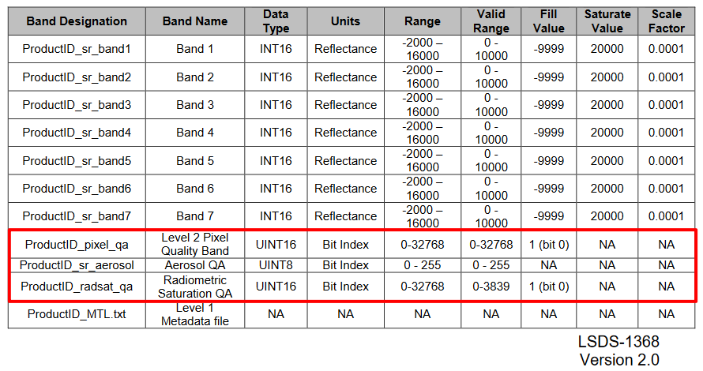
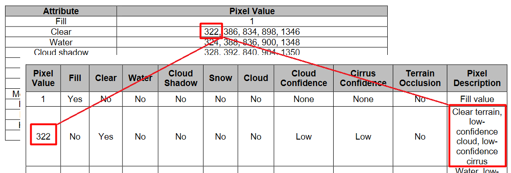
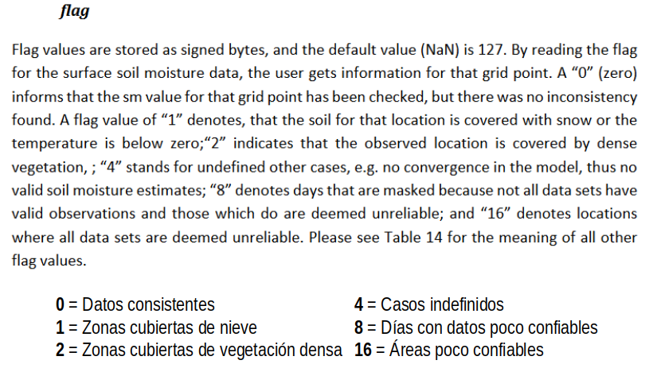

¿Dónde encontrar esta información?
Las bandas de QA muestran que tan confiable es la información que contienen las imágenes satelitales y como se detalla en la tabla anterior se encuentra información asociada a la presencia de nubes, aerosoles y saturación de los píxeles.
No todas las imágenes o productos satelitales vienen acompañados de estas bandas de calidad de la información. Por lo general, se encuentran en agencias de imágenes gratuitas y en productos creados por centros o institutos científicos.


Ilustraciones: Ejemplo imágenes Landsat Lv2.

Ilustración: Ejempo CCI Soil Moisture.